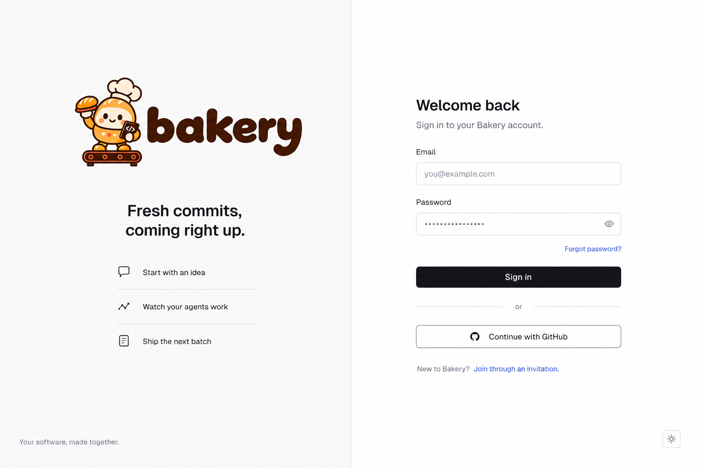
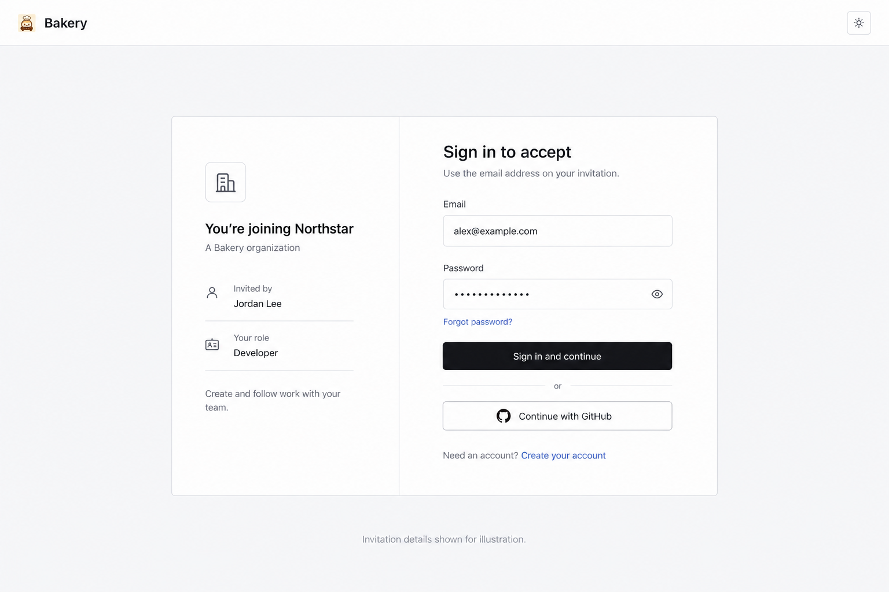

Account access, from first invite to daily work.
Explore the working mock at phone, tablet and desktop widths. Forms, links and recovery actions use synthetic data; no account is created and no email is sent.
Sign in
Responsive and accessibility fixtures
Phone layouts are real reflows. These toggles are layout stress fixtures, not completed translations. Core installation capabilities renders each screen without GitHub sign-in, password reset, passkeys, email/password change, the email-verification badge, connected clients and the preview-only review aids — the derivation the product parity gate compares against. Use your browser zoom and keyboard for additional review.
Follow a complete flow
Join an organization
Recover access
Manage account access
Protect your account
Approved visual references
B for sign-in, with the header removed and the full logo above the new bakery copy. C for invitations. The generated images are composition references; the interactive mock adds real responsive behavior and states.

